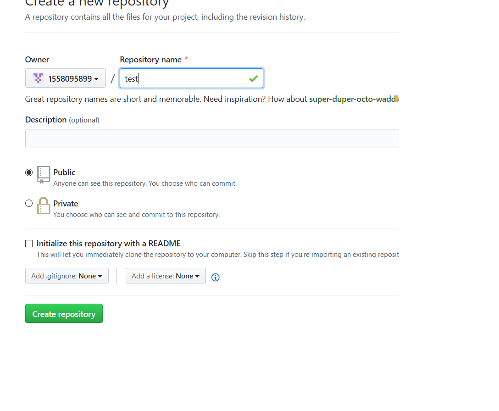
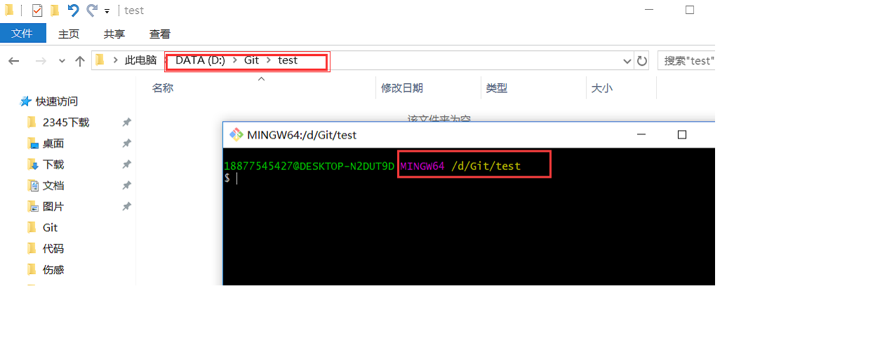
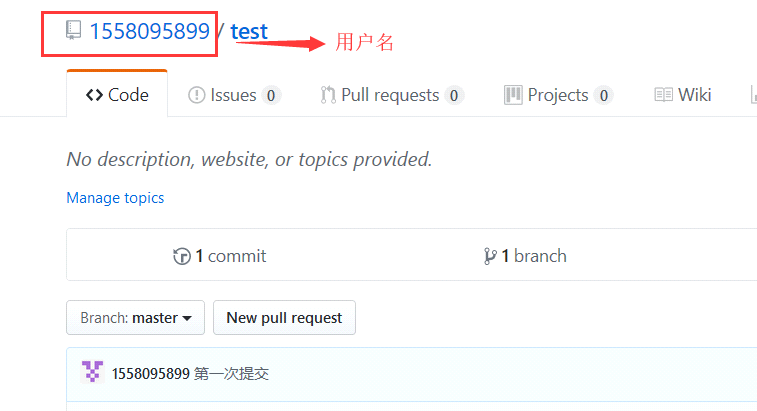
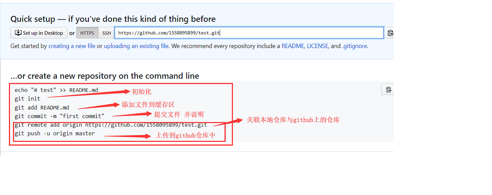
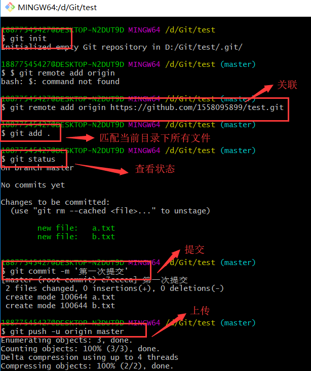
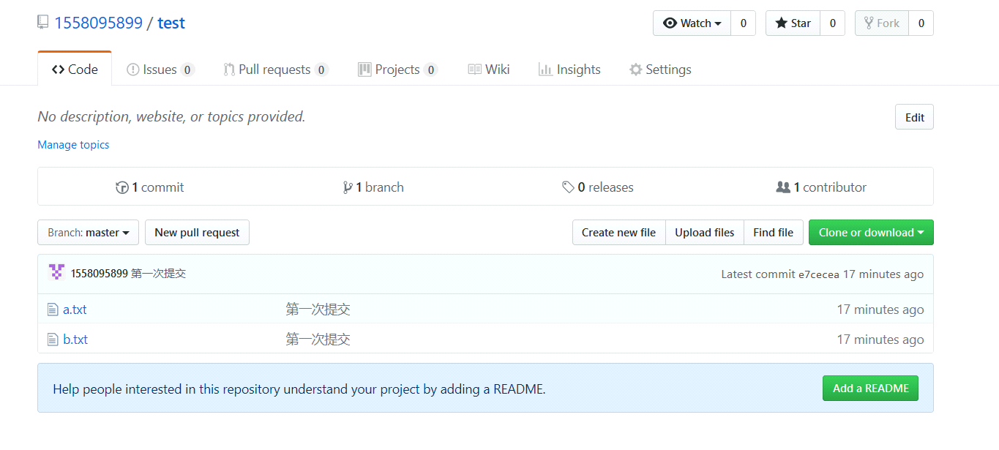
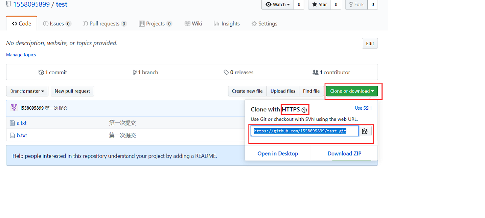
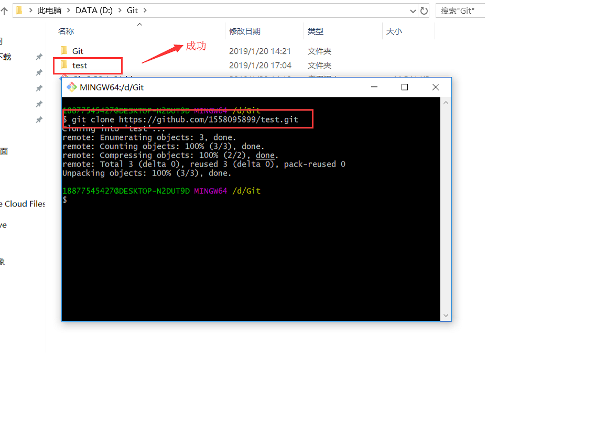
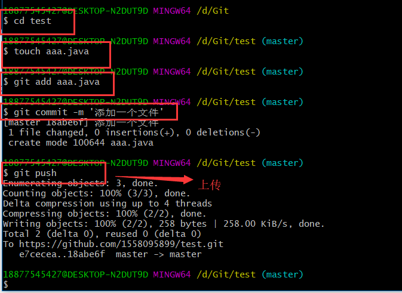
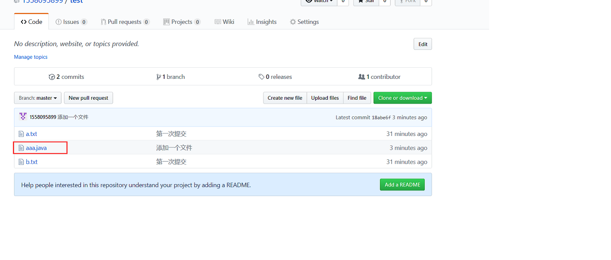

git本地仓库同步到github
1、Github仓库上什么也没有的情况下上传
1）首先github上创建一个仓库

2）本地创建一个空文件夹并在当前文件夹打开git命令窗口

3）git关联用户，基本信息的设置（即主要对哪个github用户进行操作）
设置用户名：git config –global user.name ‘用户名’

设置邮箱：git config –global user.email ‘邮箱’
4）git命令窗口依次执行以下命令


5)更新github上的页面即可获得上传的文件

2、当Github上有仓库并存在文件，需要我们自行下载，更改后上传的情况
1）首先复制github上对应仓库的连接（看清是https的）

2）在某位置上打开git命令窗口执行命令git clone https地址

3）创建文件并上传到github的test（下载文件的仓库）仓库中

4)刷新github页面即可

本博客所有文章除特别声明外，均采用 CC BY-NC-SA 4.0 许可协议。转载请注明来自 随风落叶！
 微信
微信 支付宝
支付宝

评论